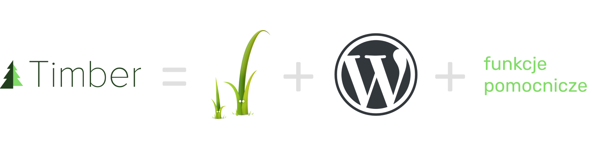

- Pobierzcie motyw z https://github.com/palmiak/timber_wcpoznan_2018
- Rozpakujcie data/plugins.zip to wp-content/plugins
- Uruchomcie wszystkie pluginy
- Zaimportujcie dane z data/xygrid.wordpress.2018-07-04.xml
Podczas warsztatów dowiemy się, jak wprowadzić Timbera do WordPressa – od podstaw Twiga, poprzez omówienie funkcji Timbera, na rozszerzaniu funkcjonalności kończąc.

Twig to system templatek stworzony z myślą o PHP. Jest to jeden z wielu projektów Frameworka Symfony.
Jak sami o sobie piszą, jest:
Instalujemy plugin z repozytorium WordPress
Tak, to wszystko :)
composer require timber/timber
Jeżeli nie używamy autoload z Composera, do functions.php dopisujemy:
require_once( __DIR__ . '/vendor/autoload.php' );
Inicjalizujemy Timbera:
$timber = new Timber\Timber();
nasz-motyw
-- lib
---- Class-post.php
---- Class-post-type.php
---- ...
-- views
---- layouts
------ base.twig
---- parts
------ entry.twig
------ header.twig
------ footer.twig
---- templates
------ front-page.twig
-- functions.php
-- front-page.php
-- ...
<?php echo $foo; ?>
{{ foo }}
// To jest Komentarze
/*
To też jest komentarz
Tylko troszkę dłuższy
*/
{#
A to komentarz w Twigu
#}
<?php
if( $a == 1 ) {
// zróbmy coś fajnego
} else {
// zróbmy coś innego
}
?>
{% if a == 1 %}
{# zróbmy coś fajnego #}
{% else %}
{# zróbmy coś innego #}
{% endif %}
<?php
echo $foo ? 'prawda' : 'fałsz';
?>
{{ foo ? 'prawda' : 'fałsz' }}
<?php
foreach ( $posts as $post ) {
// zróbmy coś
}
?>
{% for post in posts %}
{# zróbmy coś #}
{% endfor %}
<?php
$i = 0;
foreach ( $posts as $post ) {
// zróbmy coś
if ( $i==2 ) {
break;
} else {
$i++;
}
}
?>
{% for post in posts | slice(0,3) %}
{# zróbmy coś #}
{% endfor %}
{% for post in posts %}
{{ loop.index0 }}
{{ loop.index }}
{{ if loop.first ? 'To dopiero początek' }}
{{ if loop.last ? 'To już jest koniec' }}
{% endfor %}
<?php
include( 'file.php' );
?>
{% include 'file.twig' %}
{% include 'file.twig' with { 'foo' : 'bar' } %}
{% include 'file.twig' with { 'foo' : 'bar' } only %}
{% include ['file-'~ post.slug ~'.twig', 'file.twig'] ignore missing %}
<?php
$array = array_slice($array, 2, 2);
foreach( $array as $val ){
// zróbmy coś
}
?>
{% for val in array|slice(2,2) %}
{# zróbmy coś #}
{% endfor %}
<?php
$string = urlencode( strtolower( trim( $string ) ) );
?>
{{ string | trim | lower | urlencode }}
base.twig
<body>
{% block header %}
HEADER
{% endblock %}
{% block content %}
CONTENT
{% endblock %}
{% block footer %}
FOOTER
{% endblock %}
</body>
index.twig
{% extends "layouts/base.twig" %}
{% block content %}
INNY CONTENT
{% endblock %}
HEADER
INNY CONTENT
FOOTER
email m.palmowski@spiders.agency
wordpress.org profiles.wordpress.org/palmiak
github github.com/palmiak
CTO & WordPress Developer www.spiders.agency